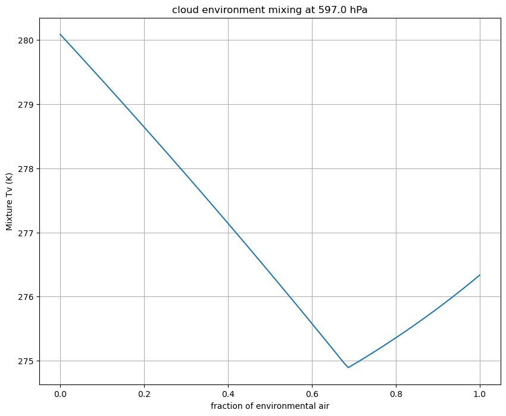

Mixing line workbook#
Link to this workbook: mixing_line_calc
In the first part of the the term we calculated the temperature of a cloud-environment mixture using a tephigram. In this notebook we calculate the virtural temperature of 100 different mixtures using the thermlim functions
import numpy as np
import pandas as pd
from pprint import pformat
import numpy as np
import json
from a405.thermo.constants import constants as c
from a405.soundings.wyominglib import write_soundings, read_soundings
from a405.thermo.thermlib import (find_Tmoist,find_rsat,find_Tv,find_lcl,find_thetaet,
tinvert_thetae)
from matplotlib import pyplot as plt
Get a little rock sounding#
set get_data=True the first time through, then False for subsequent runs with the stored sounding in save_sounding.csv and metada.json
get_data=True
if get_data:
values=dict(region='naconf',year='2012',month='7',start='0100',stop='3000',station='72340')
write_soundings(values, 'littlerock')
soundings= read_soundings('littlerock')
the_time=(2012,7,17,0)
sounding=soundings['sounding_dict'][the_time]
title_string=soundings['attributes']['header']
index=title_string.find(' Observations at')
location=title_string[:index]
print(f'location: {location}')
else:
soundings= read_soundings('littlerock')
all_sounds = soundings['sounding_dict']
all_keys = list(all_sounds.keys())
input_dict={'region': 'naconf', 'year': '2012', 'month': '7', 'start': '0100', 'stop': '3000', 'station': '72340'}
len(html_doc)=687501 from write_soundings
header is: 72340 LZK Little Rock Observations at 00Z 01 Jul 2012
here is the day: 120701
here is the day: 120701
here is the day: 120702
here is the day: 120702
here is the day: 120703
here is the day: 120703
here is the day: 120704
here is the day: 120704
here is the day: 120705
here is the day: 120705
here is the day: 120706
here is the day: 120706
here is the day: 120707
here is the day: 120707
here is the day: 120708
here is the day: 120708
here is the day: 120709
here is the day: 120709
here is the day: 120710
here is the day: 120710
here is the day: 120711
here is the day: 120711
here is the day: 120712
here is the day: 120712
here is the day: 120713
here is the day: 120713
here is the day: 120714
here is the day: 120714
here is the day: 120715
here is the day: 120715
here is the day: 120716
here is the day: 120716
here is the day: 120717
here is the day: 120717
here is the day: 120718
here is the day: 120718
here is the day: 120719
here is the day: 120719
here is the day: 120720
here is the day: 120720
here is the day: 120721
here is the day: 120721
here is the day: 120722
here is the day: 120722
here is the day: 120723
here is the day: 120723
here is the day: 120724
here is the day: 120724
here is the day: 120725
here is the day: 120725
here is the day: 120726
here is the day: 120726
here is the day: 120727
here is the day: 120727
here is the day: 120728
here is the day: 120728
here is the day: 120729
here is the day: 120729
here is the day: 120730
files written to littlerock
location: 72340 LZK Little Rock
# all_keys
np.seterr(all='ignore');
the_sound = all_sounds[(2012,7,27,0)]
find the \(\theta_{e}\) of the LCL#
convert surface values to mks#
#
# find thetae of the surface air, at index 0
#
sfc_press,sfc_temp,sfc_td =[the_sound[key][0] for key in ['pres','temp','dwpt']]
#
sfc_press,sfc_temp,sfc_td = sfc_press*100.,sfc_temp+c.Tc,sfc_td+c.Tc
sfc_press, sfc_temp,sfc_td
(np.float64(98800.0), np.float64(309.95), np.float64(291.95))
What is the LCL of this air?#
Tlcl, plcl=find_lcl(sfc_td, sfc_temp,sfc_press)
print(f'found Tlcl={Tlcl:.2f} K, plcl={plcl*1.e-2:.2f} hPa')
found Tlcl=287.87 K, plcl=761.92 hPa
find sfc rv values and check that they match lcl#
sfc_rvap = find_rsat(sfc_td,sfc_press)
lcl_rvap = find_rsat(Tlcl,plcl)
sfc_rvap, lcl_rvap
(np.float64(0.013959777747524393), np.float64(0.013967928461792234))
Find surface \(\theta_e\)#
sfc_thetae=find_thetaet(sfc_td,sfc_rvap,sfc_temp,sfc_press)
sfc_thetae
np.float64(351.24772810478737)
#
# find the index for 700 Pa/7 hPa pressure -- searchsorted requires
# the pressure array to be increasing, so flip it for the search,
# then flip the index. Above 100 hPa thetae goes bananas, so
# so trim so we only have good values
#
press = the_sound['pres']*100.
toplim=len(press) - np.searchsorted(press[::-1],.7e4)
clipped_press=press[:toplim]
#
# find temps along that adiabat
#
adia_temps= np.array([find_Tmoist(sfc_thetae,the_press)
for the_press in clipped_press])
#
# find the liquid water content for the adiabat by subtracting
# the vapor mixing ratio from the sfc mixing ratio
#
adia_rvaps = find_rsat(adia_temps,clipped_press)
adia_rls = sfc_rvap - adia_rvaps
env_temps = (the_sound['temp'].values + c.Tc)[:toplim]
env_Td = (the_sound['dwpt'].values + c.Tc)[:toplim]
height = the_sound['hght'].values[:toplim]
pairs = zip(env_Td,clipped_press)
env_rvaps= np.array([find_rsat(td,the_press) for td,the_press in pairs])
env_Tv = find_Tv(env_temps,env_rvaps)
adia_Tv = find_Tv(adia_temps,adia_rvaps,adia_rls)
press_hPa = clipped_press*1.e-2
find the density of 100 mixtures of cloud and environment at 600 hPa#
find the environmental rv and \(\theta_e\) at 600 hPa#
mix_level=np.searchsorted(clipped_press[::-1],600.e2)
index=len(clipped_press) - mix_level
mix_press_600, env_Td_600, env_temp_600 = clipped_press[index],env_Td[index],env_temps[index]
print(f"pressure, {mix_press_600*1.e-2:.1f} hPa dewpoint {env_Td_600:.1f} K , temp {env_temp_600:.1f} K")
env_rvap = env_rvaps[index]
env_thetae = find_thetaet(env_Td_600,env_rvap,env_temp_600,mix_press_600)
pressure, 597.0 hPa dewpoint 264.8 K , temp 275.8 K
Make 100 mixtures#
In the cell below, construct a list of 100 pairs of (\(\theta_e\), \(r_T\)) for 100 mixtures of cloud and environmental air at 600 hPa
Find the virtual temperature for each mixture, and make a plot of fraction of environmental air vs virtual temperature
print(f'cloud thetae {sfc_thetae:5.3f} K, env_thetae {env_thetae:5.3f} K')
print(f'cloud rt {sfc_rvap:5.3f} g/kg, env rt {env_rvap:5.3f} g/kg')
fenv=np.linspace(0,1,100)
#
# make 100 mixtures
#
logthetae_mix = fenv*np.log(env_thetae) + (1 - fenv)*np.log(sfc_thetae)
rTot_mix = fenv*env_rvap + (1 - fenv)*sfc_rvap
thetae_mix = np.exp(logthetae_mix)
pairs = zip(thetae_mix,rTot_mix)
cloud thetae 351.248 K, env_thetae 329.579 K
cloud rt 0.014 g/kg, env rt 0.003 g/kg
Find Tv for each mixture#
Create a list called Tvlist that holds Tv for each mixture
#
# find the virtual temperature for each mixture and append
# to a list called Tvlist
#
Tvlist = []
for thetae,rtot in pairs:
temp,rv,rl = tinvert_thetae(thetae,rtot,mix_press_600)
Tvlist.append(find_Tv(temp,rv,rl))
Make a plot of fenv vs. Tv#
fig,ax = plt.subplots(1,1,figsize=(10,8))
ax.plot(fenv,Tvlist)
title=f'cloud environment mixing at {mix_press_600*1.e-2:.1f} hPa'
out=ax.set(xlabel='fraction of environmental air',ylabel='Mixture Tv (K)',title=title)
ax.grid(True,which='both')
